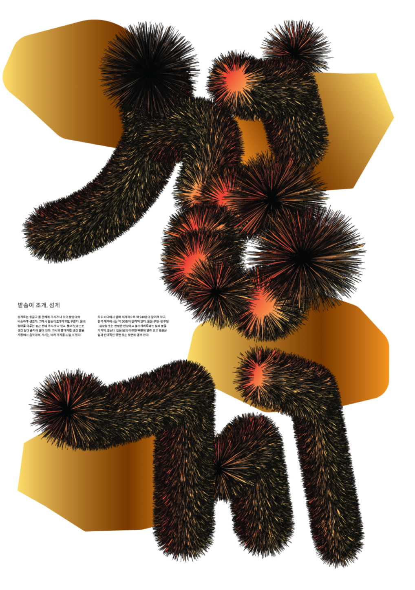

<!DOCTYPE html>
<html lang="ko">
  <head>
    <meta charset="UTF-8" />
    <meta name="viewport" content="width=device-width, initial-scale=1.0" />
    <title>Stark</title>
    <link rel="stylesheet" href="./style/reset.css" />
    <link rel="stylesheet" href="./style/style/style.css" />
  </head>
  <body>
    <div class="middle">
      <div class="middle__wrapper">
        <aside class="sidebar">
          <div class="sidebar__title">꽃으로도 때리지 말라</div>
          <div class="sidebar__description">
            꽃으로도 때리지 말라는 혁필화 스타일로<br />
            욕설을 꽃과 같은 아름다운 대상에<br />
            형상화하여, 아름다움과 욕설의 부정적인<br />
            메시지가 어떻게 상반되게 상호작용하는지를 탐구합니다. 전통적으로
            긍정적이고<br />
            경사스러운 메시지를 전담하는 혁필화의 틀을 깨고, 욕설을 미학적 가치
            속에 숨겨<br />
            놓음으로써, 관람객은 겉보기에는 아름다운 대상에 내포한 부정적인
            메시지를 인식하게 됩니다. 이 작품은 언어와 형태의 대조를 통해 욕설을
            새로운 시각에서 바라보는 경험을<br />
            제공하며, 미학과 추함의 복합적인<br />
            상호작용을 탐구합니다.
          </div>
        </aside>
        <main class="main">
          <div class="images">
            <div class="images images--one">
              
              
              
              
              <header class="text">
                <div class="text__description">Goods</div>
              </header>
              

              
            </div>
            <!-- <div class="images images--two">
              
              
            </div> -->
          </div>
          <!-- <header class="text">
            <div class="text__description">Video</div>
          </header> -->
          <!-- <iframe
            id="video1"
            class="yt-video"
            width="560"
            height="315"
            src="https://www.youtube.com/embed/rwSp2Vo-ZiY?si=BBHOj7KA_euVP5od"
            title="YouTube video player"
            frameborder="0"
            allow="accelerometer; autoplay; clipboard-write; encrypted-media; gyroscope; picture-in-picture; web-share"
            referrerpolicy="strict-origin-when-cross-origin"
            allowfullscreen
          ></iframe> -->
        </main>
      </div>
    </div>
    <a
      href="https://minjo7022.github.io/wmd-project2/index.html"
      class="close-button"
      >X</a
    >
  </body>
</html>
